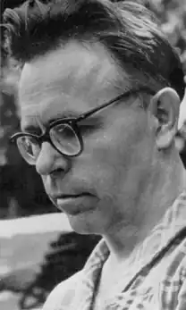

Микола Олексійович Лукаш був геній. Таких постатей, як Микола Лукаш, я не знаю в жодній нації світу, включно з єврейською нацією.
Він був геній, він був український геній. Мені пощастило: це була найближча мені людина в Україні. Мойсей Фішбейн.
Не легендарний геній, а геній, чиє життя склалося з неймовірних легенд. Судіть самі. Народився в Кролевці на Сумщині 19 грудня 1919 р. на день Св. Миколая, тож назвали його Миколою, хоч друзі частіше називали його — ЛукАш. Батько Лукаша Олексій Якович був зі старої козацької родини. Історія згадувала запорозького козака Федченка, переселеного після зруйнування Січі до Кролевця. Відомі пращури-шляхтичі: і адмірал, і статський радник, і поліглоти, і меценати, і ерудити. Мабуть, дещо передалося Миколі вже на рівні генетичному. Олексій Якович відслужив у царському війську, працював прикажчиком у купця І. Ринді, за совєтів був i чорноробом, i вантажником, i візником. У час голодомору 1919-21 рр. батько переховував родича – "ворога народу", за що родину Лукашів розкуркулили: виселили з хати, забрали коня, реманент. Від голосінь матері у Миколки стався переляк. З того часу батько перестав відмовлятися від чарки і важкою рукою припечатував нащадків. Чи не тому хлоп’я до чотирьох років було німим? Лукаш згадував: "Я все розумів, але сказати нічого не міг". Мати Василина (Васса) Іванівна Оникієнко – з шляхетсько-козацького роду, онука дяка, була надомницею-ткалею, виховувала п’ятьох дітей. Їй теж ніколи було бавитися з малим. Миколу врятував від німоти дядько Дмитро Оникієнко, який щодня читав дитині книжечки, розмовляв, бо вважав, що з такими розумними очима не можна бути німим. За іншою легендою: Миколку вкрали цигани, і він кочував із циганським табором, поки батьки не знайшли. Після повернення дитя заговорило, але ромською, згодом українською, російською, польською, німецькою; самотужки вивчило ідіш. Коли циганки хотіли йому ворожити, відмовлявся, і відповідь білявого чоловіка по-їхньому — шокувала циган. Далі навчання в школі, чорний голодомор. Дуже любив читати, але де взяти гасу? От і читав при місячному світлі, економив, втрачаючи зір; а пережиті голодомори породили звичний перелом кісток ноги. У старших класах Микола завіршував для Валі Зелiнської. Про свої перші захоплення Лукаш писав: Юносте-податносте Без ваги й пуття! Певне, з делікатности Я згубив життя… 18-річним Микола Лукаш вступив на історичний факультет Київського університету, підпрацьовував перекладачем в "Архіві давніх актів". Сподобалася Миколі однокурсниця Фаїна, напівєврейка – напівгрузинка, запросила його до себе. А бабуся їй на ідиш: мало нам твого тата-грузина, ще цей гой! Лукаш відповів давньоєврейською, потім ідиш. Бабуся остовпіла, а він гордо пішов геть. І знову кохання: одеситка Олена Біличенко вразила парубка своєю сміливістю, сексапільністю. Він ладний був одружитися, але вона просто сміялася. Це так вплинуло на вразливого Лукаша, що він узяв академвідпустку, викладав у школах Київщини. Поновився в університеті, але на філологічному факультеті, щоб учитися разом із Оленою. Пізніше Олена чотири рази брала шлюб, а Микола парубкував до останнього дня. Більше ніяких експериментів із коханням. Лукаш віддався перекладу "Фауста" Гете. Лукаш – один із небагатьох в Союзі, хто перекладав із мови оригіналів, а не російських текстів. І робивь по-білому, без чернеток; а ми так живемо, наче чернетку пишемо. З початком війни Миколу Лукаша погнали рити окопи довкола Києва. Далі Харків, звідти пішки до Кролевця. Підчас авіанальоту отримав страшне поранення в раніше пошкоджену ногу… І нова легенда: до хати важко пораненого 22-річного хлопця зайшов офіцер-угорець і сказав угорською, недовго тому лишилося мучитися від гангрени… На що Микола відповів йому рідною мовою. Вражений угорський офіцер допоміг Лукашеві з лікуванням. Після одужання Микола Лукаш працював перекладачем у місцевій комендатурі, допомагав утікачам із примусових робіт (давав їм адреси криївок УПА). З поверненням радянських військ М.Лукаша мобілізували на службу на аеродром у Харкові, де він зазнав другого поранення. 1945-1947 рр. Микола Лукаш вчився у Харківському педагогічному університеті іноземних мов, пізніше викладав у ньому німецьку та французьку мови. І хоч страшенно переживав, що втратив переклад "Фауста", відновив роботу. Працював усюди: у кімнатці гуртожитку, у "кутку" на Журавлiвцi, на канапі, наданій директором НДI лісівництва, за "власним" столиком у науковiй бібліотеці. Найталановитіший перекладач України у 1953 р. видав друком перший переклад, а у 1955-му надрукував найулюбленіший на 500 сторінок "Фауст" Ґете, що приніс митцю вічну славу. Наступна Лукашева "бомба" — перший повний український 660-сторінковий "Декамерон" Боккаччо, перекладений з оригіналу. У 1956 р. за рекомендаціями М. Пригари, М. Рильського, М. Терещенка Микола Лукаш став членом СПУ. Тричі Лукаша висували на здобуття Шевченківської премії і тричі його кандидатуру відхиляли. У народі цитувалися феноменальні пасажі Лукаша: "Коли коваль ковалисі коваленят кує, ковалиха ковалеві ковадлом керує". Переклав понад 1000 видатних творів світової літератури від 100 авторів, із 20 мов, але не пам’ятав номера свого телефону: "Я собі не дзвоню". З роками йому все дужче дошкуляв ревматичний біль у руках, не дозволяв тримати пера, друкувати на машинці. Нарешті маестро з кімнатки-комуналки переїхав до однокімнатних "хоромів". Правда, у квартирі без меблів викинув газову плиту, щоби було місце для книжок. Ходив пити каву на нижньому поверсі готелю "Київ" (подвійну там доволі пристойно готували), кілька разів на місяць ходив обідати в "Інтурист" (пізніше у "Дніпро"), щоби почути справжні іноземні мови (комплексні обіди тоді коштували 2.20 крб.). Епатажний дивак, який ніколи не мав пальта (не заробив на нього!); у старому піджаку, светрі, кашне; дуже вправний шахіст у парку Шевченка, азартний шанувальник доміно й більярду у Маріїнському парку, вишуканою українською лаявся із завсідниками, добиваючи вовків, забиваючи козла; обожнював скандувати "Ки-їв!" на стадіоні "Динамо". У березні 1973 р. одразу ж після засудження Івана Дзюби за книгу "Націоналізм чи русифікація?" Микола Лукаш кинув до поштової скриньки лист, адресований голові президії Верховної Ради УРСР, голові Верховного суду УРСР, прокуророві УРСР; копія — президії Спілки письменників. Цей лист – неперевершено інтелігентний стьоб Дон Кіхота. "У зв’язку з тим, що я, нижчепідписаний, цілком поділяю погляди літератора Дзюби Івана Михайловича… прошу ласкаво дозволити мені відбути замість вищеназваного Дзюби І. М. визначене йому судом покарання (5 років концтабору та 5 років спец поселення)". Уряд не мав почуття гумору: М. Лукаша виключили зі Спілки письменників "за порушення статуту". Довгенько біля його під’їзду стояв пост міліції, що не пропускав до нього нікого. 20 років інтелектуал не міг друкуватися, не мав стабільного заробітку. Цей метод називався "приборкати вимушеним жебрацтвом" поліглот називав "злукашіння", до нього й сьогодні вдається окупаційна влада. Два десятиліття ерудит світової слави носив на барахолку безцінні книжки, ходив голодним. Нерідко його "випадково" зустрічав поліщук Григорій Кочур із Чернігівщини, запрошував перекусити, почаркувати. Микола Олексійович належну йому дозу горілки виливав у фужер, примовлячи: "Ми з тобою не п’яниці, цяпати чарками нам не годиться". Переніс Лукаш складну онкологічну операцію. Тільки 1987-го Микола Олексійович був поновлений у СПУ. З натхненням перекладав "Дон Кіхота", легковажив: "Гей, Миколо, і охота з себе корчить Дон Кіхота?". Лицар слова все життя збирав матеріали для словника "Моя матюкологія", казав, що для означення жінки інтимної професії добрав 286 синонімів. 29 серпня 1988 року Микола Олексійович Лукаш помер від онкології. На могилі великого перекладача–поліглота пам’ятник власним коштом спорудила його шанувальниця, а жодна влада в Україні не спромоглася навіть на меморіальну табличку.